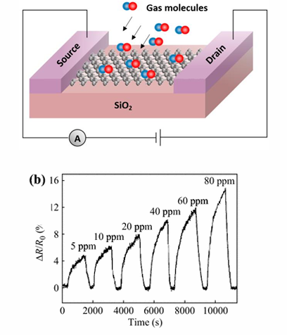

Graphene for Gas Sensing
Functional nanomaterials like graphene are incredibly effective in field-effect transistor gas sensors (used for detecting NO, CO, and NH3). Gas molecules adsorb onto the graphene surface, and their interaction with the delocalized π-electrons alters the material's charge carrier concentration, causing highly detectable shifts in electrical resistance.
- High Sensitivity: Graphene's massive surface area allows for a high density of adsorbed molecules per unit area.
- Quick Response: Even minute changes in surface interactions cause significant shifts in electrical properties.
Metal Oxide (MOS) Sensors
Metal oxide nanoparticles (like TiO2, ZnO, and NiO) can also act as powerful ethanol sensors. Oxygen molecules adsorb onto the surface, extracting electrons to form O- ions. When ethanol gas hits the surface, it reacts with these oxygen anions, releasing the trapped electrons back into the conduction band, abruptly changing the resistance.

Li-ion Battery Electrode Materials
Functional materials are the core of modern energy storage. In a typical Li-ion battery:
- Cathode: Often made of Lithium Cobalt Oxide (LiCoO2).
- Anode: Made of Graphite. To increase performance, advanced batteries utilize graphene micro/nano structures in the anode to rapidly store and transfer lithium ions.
Watch the video below to see the exact nanoscale mechanism of how metal oxide gas sensors detect molecules:
Practice Exercises
Test your knowledge on Sensing and Storage applications.
1. How does a graphene-based gas sensor physically detect gas molecules?
A) The gas physically burns holes in the graphene lattice
B) Adsorbed gas molecules interact with π-electrons, altering electrical resistance
C) The gas changes the visual color of the graphene
2. Why do nanostructured materials provide such high sensitivity in sensors?
A) They possess a massive surface area per unit of volume
B) They have zero electrical resistance
C) They are completely unaffected by temperature
3. In Metal Oxide (MOS) ethanol sensors, what chemical interaction triggers the resistance change?
A) Ethanol dissolving the metal oxide nanoparticles
B) Ethanol freezing on the surface
C) Ethanol reacting with adsorbed oxygen anions, releasing electrons back into the material
4. In a standard Li-ion battery, what material is typically used for the Cathode?
A) Lithium Cobalt Oxide (LiCoO2)
B) Pure Graphite
C) Graphene
5. To improve energy storage performance, what nanostructure is often integrated into a battery's anode?
A) Titanium Dioxide films
B) Graphene micro/nano structures
C) Zinc Oxide nanowires